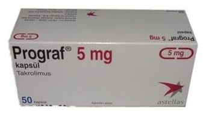

Prograf 5 mg Kapsül, 50 Adet

Ne için kullanılır
KT · Bölüm 1• PROGRAF 5 mg kapsül, her biri beyaz ile “5 mg” ve “[f] 657” baskılı, beyaz toz içeren, opak, grimsi-kırmızı renkli 50 kapsüllük ambalajlarda takdim edilmektedir. Kutu içerisinde, kapsülleri nemden korumak için içinde nem çekici bulunan koruyucu bir alüminyum folyo ambalaj içerisindeki 10 kapsüllük 5 blister bulunmaktadır.
• PROGRAF, immünosüpresanlar (bağışıklık baskılayıcı) adı verilen bir ilaç grubuna aittir. Organ naklinizi takiben (örn. karaciğer, böbrek, kalp) vücudunuzun bağışıklık sistemi yeni organı reddetmeye çalışacaktır. PROGRAF, vücudunuzun bağışıklık cevabını kontrol ederek, vücudunuzun nakledilen organı kabul etmesini sağlamak için kullanılmaktadır. PROGRAF çoğu kez, bağışıklık sistemini baskılayan diğer ilaçlarla birlikte kullanılır.
• Ayrıca PROGRAF, size nakledilen karaciğer, böbrek, kalp ya da diğer organınızın devam eden reddedilme durumu için ya da daha önceden almış olduğunuz bir tedavinin organ naklinden sonraki bağışıklık cevabını kontrol edemediği durumlarda da verilebilir.